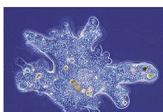
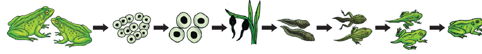
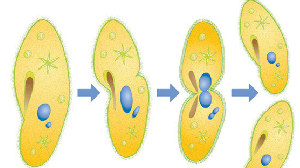
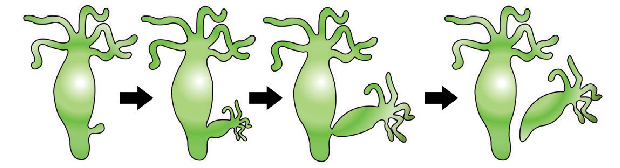
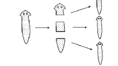
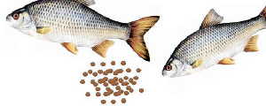
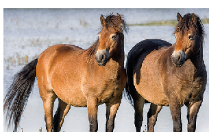

အမီးဗား (Amoeba)
ဆဲလ်တစ်ခုတည်းသတ္တဝါဖြစ်ပြီး နှစ်ပိုင်းသိမ်ပြတ်ကာ မျိုးပွားသည်။ (ပုံ ၆-၅)
မိခင်အမီးဗားဆဲလ်တစ်ခုသည် အလယ်မှ နှစ်ခြမ်းကွဲထွက်၍ အမီးဗားအသစ် (၂) ကောင် ဖြစ်ပေါ်လာသည်။
သတ္တဝါများတွင် လိင်မဲ့မျိုးပွားခြင်း နှင့် လိင်ရှိမျိုးပွားခြင်း ဟူ၍ နှစ်မျိုးခွဲခြားနိုင်သည်။ လိင်မဲ့မျိုးပွားခြင်းဆိုသည်မှာ အထီး၊ အမ ဟူ၍မရှိဘဲ တစ်ကောင်တည်းမှ ပွားများခြင်းဖြစ်ပြီး၊ လိင်ရှိမျိုးပွားခြင်းဆိုသည်မှာ အမမျိုးဥ (egg) နှင့် အဖိုသုက်ကောင် (sperm) တို့ ပေါင်းစပ်သန္ဓေအောင်ပြီး သန္ဓေအောင်ဥ (zygote) ဖြစ်ပေါ်ခြင်းကို ခေါ်သည်။
၆-၃-၂ လုပ်ငန်း (၂) — ပေးထားသော သက်ရှိများသည် မည်သည့် သန္ဓေအောင်ခြင်းအဆင့်များ ရှိသနည်း။
အမမျိုးဥနှင့် အဖိုသုက်ကောင်တို့သည် ခန္ဓာကိုယ်ပြင်ပ (ရေထဲ) တွင် တွေ့ဆုံရန် အသင့်ဖြစ်နေပါသည်။

ပုံ (၆-၈ က) ဖား — ပြင်ပသန္ဓေအောင်ခြင်း (ဥ → သန္ဓေအောင်ဥ → ဖားလောင်း → ဖား)
ပုံ (၆-၈ ခ) လူ — အတွင်းသန္ဓေအောင်ခြင်း (အမမျိုးဥ + အဖိုသုက်ကောင် → သန္ဓေသား → ကလေး)
လုပ်ငန်း (၁) — ပေးထားသောသက်ရှိများတွင် မည်သည့်သက်ရှိသည် လိင်မဲ့/လိင်ရှိမျိုးပွားနည်းဖြင့် မျိုးပွားသနည်း စစ်ထုတ်ကြည့်ရှုပါ။

ဆဲလ်တစ်ခုတည်းသတ္တဝါဖြစ်ပြီး နှစ်ပိုင်းသိမ်ပြတ်ကာ မျိုးပွားသည်။ (ပုံ ၆-၅)

နှစ်ပိုင်းသိမ်ပြတ်ခြင်း (စုံကွဲပွားခြင်း) ဖြင့် မျိုးပွားသည်။ (ပုံ ၆-၆ နှင့် ၆-၇)

ကိုယ်ခန္ဓာဘေးမှ အဖူး (Bud) ထွက်၍ မျိုးပွားသည်။ (ပုံ ၆-၆)

ကိုယ်ခန္ဓာ အပိုင်းပိုင်းပြတ်တောက်ရာမှ အကောင်သစ်ပြန်ဖြစ်လာသည်။ (ပုံ ၆-၇)

ရေထဲတွင် အမမျိုးဥနှင့် အဖိုသုက်ကောင် တွေ့ဆုံသန္ဓေအောင်သည်။ (ပုံ ၆-၇)
ဥ → သန္ဓေအောင်ဥ → ဖားလောင်း → ဖား အဆင့်ဆင့်ကြီးထွားသည်။ (ပုံ ၆-၈)
မိခင်ခန္ဓာကိုယ်အတွင်း သန္ဓေအောင်၍ သန္ဓေသားဘဝ ဖြတ်ကျော်သည်။ (ပုံ ၆-၅, ၆-၈)

မြင်းထီးနှင့် မြင်းမတို့မှ သန္ဓေအောင်၍ မြင်းလေးမွေးဖွားသည်။ (ပုံ ၆-၅)
ပြင်ပသန္ဓေအောင်ခြင်းနှင့် အတွင်းသန္ဓေအောင်ခြင်းတို့ကို ပြန်လည်စစ်ဆေးပါ။
သန္ဓေအောင်ခြင်း ၂ မျိုးရှိသည်။ ပြင်ပသန္ဓေအောင်ခြင်း — အမမျိုးဥနှင့် အဖိုသုက်တို့သည် ခန္ဓာကိုယ်ပြင်ပတွင် တွေ့ဆုံပြီး သန္ဓေအောင်ကြသည်။
ဥပမာ — ငါး၊ ဖား၊ ရေပုတ်သင်
အတွင်းသန္ဓေအောင်ခြင်း — အမမျိုးဥနှင့် အဖိုသုက်တို့သည် မိခင်၏ ခန္ဓာကိုယ်အတွင်းတွင် တွေ့ဆုံပြီး သန္ဓေအောင်ကြသည်။
ဥပမာ — လူ၊ မြင်း